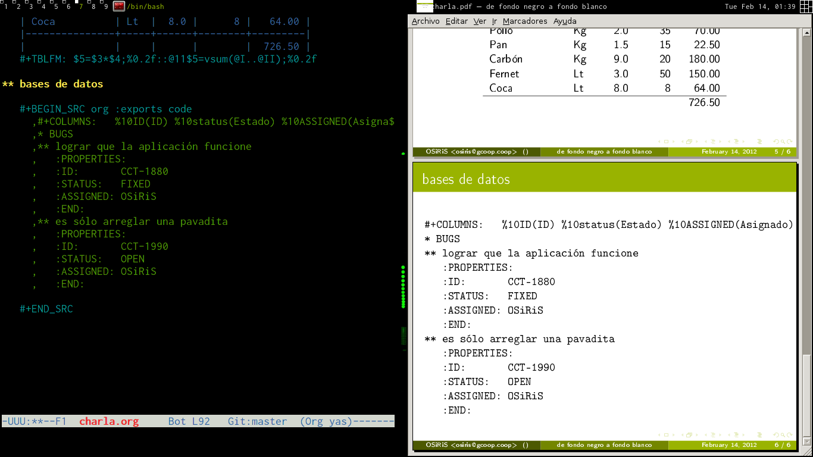

De Fondo Negro a Fondo Blanco
ABSOLUTELLY NO WARRANTY | CC-BY-SA | OSiUX | .git
En gcoop, solemos auto-capacitarnos al menos una vez por mes, algún socio que tenga ganas de explicar algo que le resulte interesante compartir puede dar una charlita.

Esta vez, tuve la suerte de mostrar un breve resumen sobre cómo usar org-mode que es parte de Emacs y que básicamente permite hacer de todo, planificación de proyectos, manejo de agenda y calendario, ejecutar código y capturar resultados, realizar tablas y planillas de cálculo, administración de tareas, tomar simples notas, hacer mapas mentales, y mucho más. Entre varias características, es posible obtener elegantes documentos en PDF o HTML.
Para muestra, nada mejor que ver el texto 1 con el que realicé los
slides 2 de la charla, un simple archivo de texto plano, que al
presionar C-c C-e p se convierte en un LaTeX Beamer:
Seguramente iré mejorando los slides más adelante, pero escribir esa charlita me tomó sólo 3hs y 25minutos
* de fondo negro a fondo blanco :LOGBOOK: CLOCK: [2012-02-13 lun 23:45]--[2012-02-14 mar 03:10] => 3:25 :END: